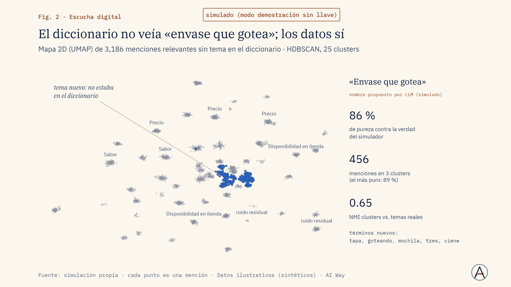
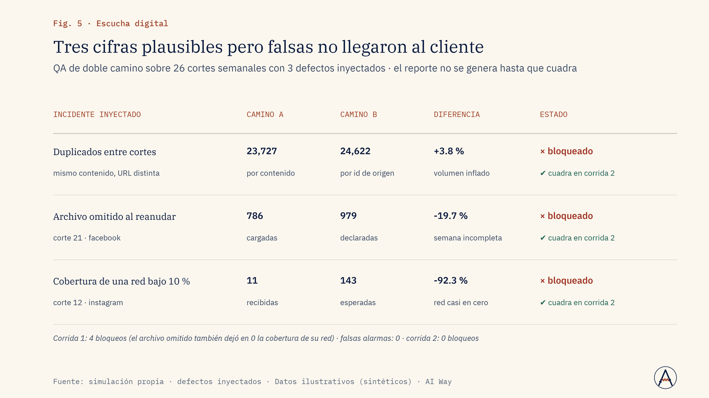
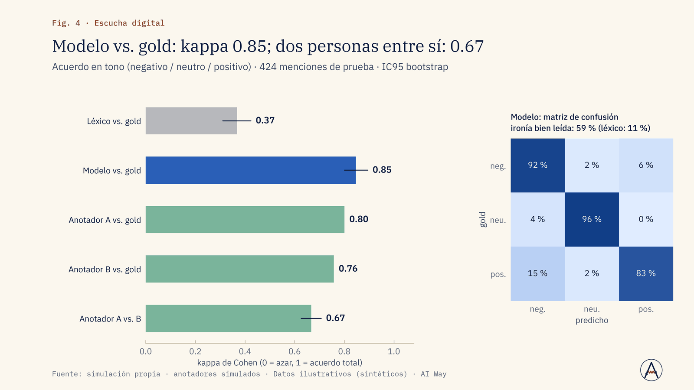

Ventas
¿Qué quejas nos están costando clientes?
Agrupamos las menciones por tema con tu taxonomía y medimos qué quejas crecen por marca y por red.
Priorizar qué corregir primero en producto o servicio.
Servicio · Nº 01
Qué se dice de tu marca, quién lo dice y qué tan confiable es cada número: cada semana, o en dos horas cuando hay crisis.
01 · El problema
Las marcas reciben tableros de escucha con miles de menciones, porcentajes de sentimiento y «temas» que nadie sabe de dónde salen. Tres dolores se repiten:
Ruido. Gran parte de lo que traen las herramientas no habla del tema; filtrarlo a mano no escala y filtrarlo con palabras clave tira menciones buenas.
Cifras que no se sostienen. Un cero que en realidad es «no se midió», un porcentaje sin denominador o una red descargada a medias terminan en la presentación al director.
Temas impuestos. Las taxonomías genéricas no capturan lo que la gente comenta de verdad sobre la categoría ni sobre la competencia.
02 · Enfoque
03 · Resultados de la demo
Cadena de escucha completa sobre 24,000 publicaciones sintéticas con verdad conocida (4 marcas ficticias, 6 redes, 26 semanas). Cada paso se mide contra la verdad del simulador, nunca contra datos de un cliente.
Solo 4.4 % de las menciones necesitó un LLM
Fuente: simulación propia · Datos ilustrativos (sintéticos) · AI Way
La alerta salta 3 días antes del máximo
Fuente: simulación propia · Datos ilustrativos (sintéticos) · AI Way



04 · Límites declarados
05 · Aplicaciones de negocio
Ejemplos de decisiones que este servicio ayuda a tomar; el alcance se define en el diagnóstico.
Ventas
Agrupamos las menciones por tema con tu taxonomía y medimos qué quejas crecen por marca y por red.
Priorizar qué corregir primero en producto o servicio.
Marketing
Quitamos lo irrelevante con la cascada de relevancia y comparamos volumen, tono y temas antes y después.
Ajustar mensajes y canales con cifras que se pueden auditar.
Operación y costos
Reglas y un modelo local resuelven casi todo; el LLM solo ve la franja de duda, con ledger de coste.
Fijar un presupuesto de escucha por corte y vigilarlo.
Riesgo y crisis
El tendenciómetro mide la aceleración de cada tema y alerta en la subida; separa las cuentas coordinadas.
Activar el protocolo de crisis cuando todavía hay margen.
Dirección y estrategia
Medimos voz y tono por competidor con el mismo filtro y un QA de doble camino en cada corte.
Llevar al comité cifras que resisten una auditoría.
Producto e innovación
Embeddings y HDBSCAN agrupan lo que el diccionario no cubre; un LLM propone el nombre y una persona aprueba.
Sumar el tema nuevo al seguimiento y al plan de producto.
06 · Paquetes
Diagnóstico puntual: 1 marca + 2 competidores, hasta 4 redes, 3 meses de histórico, taxonomía estándar del sector, reporte ejecutivo y sábana de menciones.
Duración típica: 2 a 3 semanas
Monitoreo semanal o quincenal de 1 marca + hasta 5 competidores, taxonomía a medida, temas emergentes, tablero, validación con muestra etiquetada y bitácora de coste.
Duración típica: Arranque en 4 semanas; operación mensual renovable
Operación diaria con cortes coyunturales en 2 h o menos, QA de doble camino, detección de cuentas coordinadas, varias marcas o países y pipeline instalado en la nube del cliente.
Duración típica: Arranque en 6 a 8 semanas; operación continua
Sin precios publicados: cada propuesta se cotiza tras un diagnóstico de alcance.
07 · Preguntas frecuentes
No necesariamente: podemos partir de sus exportes y añadir depuración, taxonomía, validación y reporte.
Se mide en cada proyecto contra una muestra etiquetada; el número se reporta, no se supone.
Se presupuesta por corte y se lleva una bitácora de coste; la cascada reduce las llamadas al LLM.
Sí, en modo coyuntura, con alcance acotado y las mismas reglas de QA.
El tono y la relevancia pueden correr con modelos locales; el LLM externo es opcional.
08 · Descarga
Presentación de la demo (PDF, 1.4 MB). El caso completo: problema, método, resultados contra criterio y límites declarados.
Descargar PDFSiguiente paso
En una llamada de 30 minutos revisamos si se puede, cómo lo mediríamos y qué no te podemos prometer.
Otros servicios